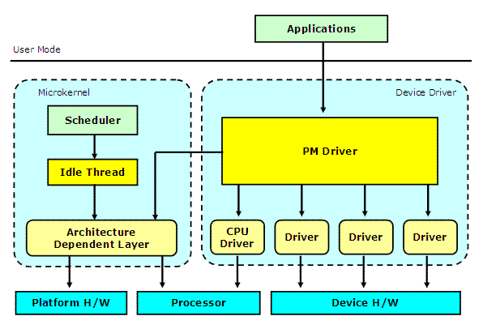

|
|||||||||||||||||||||||||||||||||||||||
| Prex Home > Document Index > Prex Power Management | |||||||||||||||||||||||||||||||||||||||
Prex Power ManagementVersion 0.8.1, 2008/09/11Table of Contents
IntroductionPrex is designed to be used with battery-powered devices, such as mobile phones or consumer electronics devices. So, Prex provides an integrated and system-wide set of power management features. It helps to extend battery life, save energy and reduce heat and noise. This document describes the design and implementation of the power management features of Prex. Architecture OverviewThe following components work together for power management in Prex.
 System Power ManagementPower StatesPrex supports the following power states.
In the suspend state, the system powers down devices that are not needed in order to safe electricity, e.g. it may switch the monitor, sound card or modem off and turn them back on when the system returns from the suspend state. Suspend TimerPrex provides the suspend timer which enters the system to the suspend state after a period of inactivity. If a device driver detects some user activities (e.g. keyboard input), the driver should notify it to the PM driver by using pm_active() function to reload the suspend timer. An application can set the timeout value for suspend by using a device I/O control function of the PM driver. Power PolicyThe PM driver maintains a system-wide policy setting for its power operations. A user application can change the power policy appropriately for the user environment. Prex supports the following two power policies. Table 1. Power Policy
PM Driver Interface
PM I/O ControlIOCTL functions manipulate the power state and power policy used by the PM driver. It also handles the request for the suspend timer. Table 2. PM I/O Controls
PM MessagesEach device driver can receive the power management messages sent by the PM driver.
The device drivers should monitor these PM messages by using event() methods. And, when the driver receives EVT_SUSPEND, it should program the device to lower mode to conserve total system power.
int
XXX_event(int event)
{
switch (event) {
case EVT_SHUTDOWN:
/* Program h/w for shutdown */
break;
case EVT_SUSPEND:
/* Save h/w state for suspend */
break;
case EVT_RESUME:
/* Restore h/w state after suspend */
break;
case EVT_POLICY_CHANGE:
/* Change the power state depending on power policy */
break;
}
}
PM ServicesPM driver exports the following functions for other device drivers. int pm_suspend(void); int pm_resume(void); int pm_poweroff(void); int pm_reboot(void); void pm_active(void); int pm_getpolicy(void);
Idle ThreadThe idle thread works as a kernel thread, and it is assigned the lowest scheduling priority in the system. Thus, the idle thread runs when no other thread is active. It has the role of cutting down the power consumption of the system. An idle thread is just a forever-loop to call the machine dependent routine to cut power. The following thread_idle() routine is called at the end of the kernel initialization.
void
thread_idle(void)
{
for (;;) {
machine_idle();
sched_yield();
}
}
The machine_idle() routine will program the platform H/W to the low power mode. This is typically invoking the power saving (halt) instruction supported by the processor. If any interrupts are occurred in this low power mode, it must be returned immediately from machine_idle(). Then, the idle thread will call sched_yield() to check the re-scheduling. Processor Power ManagementDynamic Voltage ScalingDynamic voltage scaling (DVS) is widely used with mobile systems to save the processor power consumption, with minimum impact on performance. The basic idea is come from the fact the power consumption is proportional to V^2 x f, where V is voltage and f is frequency. Since processor does not always require the full performance, we can reduce power consumption by lowering voltage and frequency. AlgorithmAdjusting CPU SpeedWe use the DVS algorithm known as Weiser Style [1]. If the utilization prediction x is high (over 70%), increase the speed by 20% of the maximum speed. If the utilization prediction is low (under 50%), decrease the speed by (60 - x)% of the maximum speed. DVS Algorithm: Weiser Style
run_cycles += excess_cycles;
run_percent = (run_cycles * 100) / (idle_cycles + run_cycles);
next_excess = run_cycles - speed * (run_cycles + idle_cycles) / 100;
if (next_excess < 0)
next_excess = 0;
if (excess_cycles > idle_cycles)
newspeed = 100;
else if (run_percent > 70)
newspeed = speed + 20;
else if (run_percent < 50)
newspeed = speed - (60 - run_percent);
if (newspeed > max_speed)
newspeed = max_speed;
if (newspeed < min_speed)
newspeed = min_speed;
excess_cycles = next_excess;
excess_cycles is defined as the number of uncompleted run cycles from the last interval. For example, if we find 70% activity when running at full speed, and their processor speed was set to 50% during that interval, excess_cycles is set to 20%. This value (20%) is used to calculate the processor speed in the next interval. Max CPU SpeedThe PM driver adjusts max CPU speed by using DVS algorithm called DVS<3> [2]. It computes an exponentially moving average of the previous intervals. "weight" is the relative weighting of past intervals relative to the current interval. DVS Algorithm: AVG<3>predict = (weight x current + past) / (weight + 1) Processor Driver InterfaceCPU I/O ControlIOCTL functions for CPU are as follows: Table 3. CPU I/O Controls
CPU information structure:
struct cpu_info {
unsigned int id; /* processor id */
char name[50]; /* name string */
int speed; /* max speed in MHz */
int power; /* max power in mV */
int clock_ctrl; /* true if it supports clock control */
};
CPU statistics data:
struct cpu_stat {
int speed; /* speed in MHz */
int power; /* power in mVolt */
};
Performance Control ServicesIf the target processor supports performance control, the driver can export the following service to utilize it. int cpu_initperf(void); int cpu_setperf(int level); int cpu_getperf(void);
Power Management UtilitiesCPU MonitorThe CPU monitor is a sample application to show the current processor power state - speed and its power. CPU voltage monitor Speed: 600MHz 0|********------------|100 Power: 956mV 0|*************-------|100 The source code of this application can be found in the directory named "/usr/sample/cpumon".
System ResetWhen the PM driver receives a reset request from users or drivers, it will call machine_reset() service in the microkernel. Or, the microkernel may reset the system by itself if it finds an unrecoverable error. The PM driver will broadcast a shutdown message (EVT_SHUTDOWN) for all device drivers. A device driver can prepare for the shutdown by monitoring this driver message. References
|
|||||||||||||||||||||||||||||||||||||||
|
Copyright© 2008 Kohsuke Ohtani |
|||||||||||||||||||||||||||||||||||||||